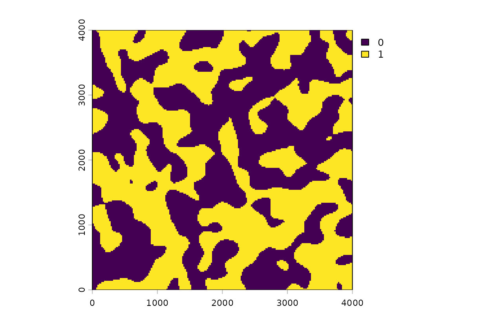
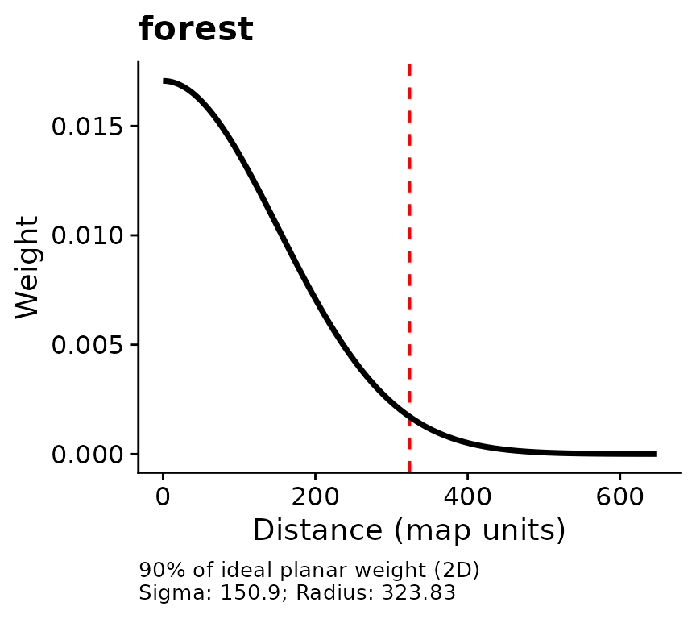
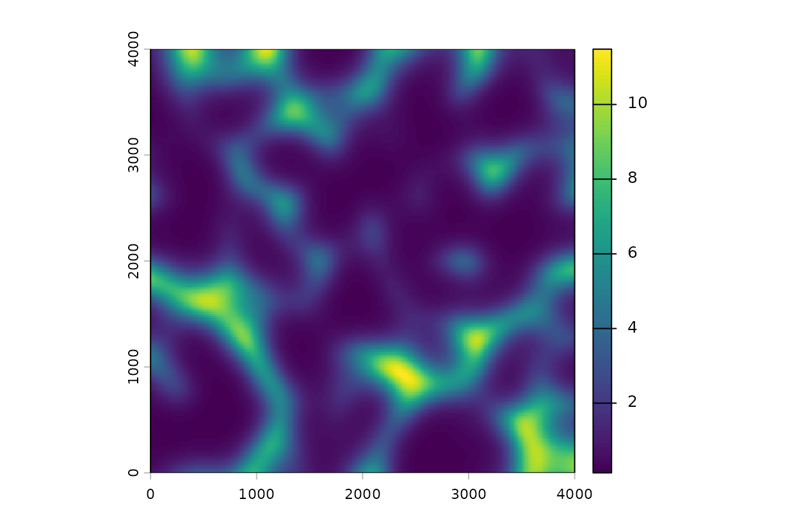

10. Estimate Scales of Effect in Step-Selection Models
Bill Peterman
Source:vignettes/v10-step-selection.Rmd
v10-step-selection.RmdWhat this vignette covers
A step-selection model compares the location an animal moved to (the used step) with locations it could have reached instead (the available steps). Each used step and its available steps form one choice set, and a conditional logistic regression estimates which features raise the chance that a step is the one chosen. Here the scale of effect answers a specific question. How much of the landscape around the end of a step does the animal respond to when it chooses where to go?
You will simulate steps with a known scale, fit the model with
multiScale_optim(backend = "conditional_logit"), read the
scale and the selection coefficients, predict, and score the model on
held-out choice sets. Read
vignette("v01-quickstart", package = "multiScaleR") first.
The examples need the survival package, which
multiScaleR suggests but does not install, so the code here
runs only when survival is available.
Simulate steps with a known scale of effect
Because the count data in the other vignettes are not movement data, this vignette builds its own. The landscape is a 4 km square of forest (1) and open ground (0) on 20 m cells.
set.seed(321)
# A 200 x 200 grid of 20 m cells in a projected CRS, so map units are meters
noise <- rast(nrows = 200, ncols = 200, xmin = 0, xmax = 4000,
ymin = 0, ymax = 4000, crs = "EPSG:32617")
values(noise) <- rnorm(ncell(noise))
# Smooth the noise and cut it at zero to get patches of forest
forest <- focal(noise, w = focalMat(noise, 100, "Gauss"), fun = "sum",
na.rm = TRUE) > 0
forest <- forest * 1 # logical to numeric 0/1
names(forest) <- "forest"
plot(forest)
The simulated forest layer. Forest is 1 and open ground is 0.
The animal in this simulation responds to the amount of forest around a candidate location, weighted by a Gaussian kernel with a sigma of 150 m. It also prefers short steps.
# The landscape as the animal perceives it: forest weighted by the true kernel
true_sigma <- 150
perceived <- focal(forest, w = focalMat(forest, true_sigma, "Gauss"),
fun = "sum", na.rm = TRUE)
n_sets <- 400 # choice sets (one per observed step)
n_alt <- 5 # candidate end points per choice set
# Each choice set starts at a random location away from the map edge.
# Candidates leave it in a random direction with a random step length (m).
start_x <- rep(runif(n_sets, 1000, 3000), each = n_alt)
start_y <- rep(runif(n_sets, 1000, 3000), each = n_alt)
step_m <- rgamma(n_sets * n_alt, shape = 2, scale = 100)
angle <- runif(n_sets * n_alt, 0, 2 * pi)
steps <- data.frame(
step_id = rep(seq_len(n_sets), each = n_alt), # choice-set ID
x = start_x + step_m * cos(angle),
y = start_y + step_m * sin(angle),
sl_km = step_m / 1000 # step length in km
)
# Perceived forest at each end point, standardized across all end points
f <- extract(perceived, as.matrix(steps[, c("x", "y")]))[, 1]
z <- (f - mean(f)) / sd(f)
# True selection: +1 per standard deviation of forest, -3 per km of step.
# The animal takes exactly one candidate per choice set.
score <- exp(1 * z - 3 * steps$sl_km)
steps$case_ <- 0
for (s in seq_len(n_sets)) {
rows <- which(steps$step_id == s)
steps$case_[sample(rows, 1, prob = score[rows])] <- 1
}
head(steps, 5)
#> step_id x y sl_km case_
#> 1 1 796.5978 1407.895 0.40284437 0
#> 2 1 1111.5662 1191.215 0.35312305 0
#> 3 1 1135.6157 1525.462 0.04405726 1
#> 4 1 1461.6048 1562.778 0.28484673 0
#> 5 1 1214.1488 1594.263 0.06691232 0How to read the output: Each row is one candidate
end point, and the five rows shown are one choice set.
case_ is 1 for the step the animal took and 0 for the four
it did not. Keep three true values in mind for later. Sigma is 150 m,
the forest effect is 1 per standard deviation, and the step-length
effect is -3 per km.
Your own data need the same layout, and the backend stops with an error when it is not met.
-
One row per step end point, used and available
together, in the order of the points you pass to
kernel_prep(). - A 0/1 column that marks the used step, with no missing rows.
- A choice-set ID column. Every set holds exactly one used step and at least one available step. IDs must be unique across animals and movement bursts.
Prepare the inputs and fit the model
kernel_prep() extracts the forest cells within
max_D of every step end point. Leave bin at
its default of TRUE, because the
conditional_logit backend works from the distance-binned
summaries that setting stores. Then fit a starting model with
survival::clogit(). Use one strata() term that
names the choice-set ID column, and set model = TRUE so the
fitted object keeps its data. If the formula transforms a covariate with
scale(), poly(), or a spline, also set
na.action = stats::na.fail. Recent versions of
survival otherwise drop the stored center, spread, or
knots, even when no row is missing, and predictions cannot recover the
original units.
library(survival)
# Step end points as a terra SpatVector, in the row order of `steps`
pts <- vect(steps, geom = c("x", "y"), crs = "EPSG:32617")
# max_D is the largest distance (m) considered around a point
inputs <- kernel_prep(pts = pts, raster_stack = forest, max_D = 600,
kernel = "gaussian", bin = TRUE, verbose = FALSE)
# Add the standardized, kernel-weighted forest covariate to the step table
df <- data.frame(steps, inputs$kernel_dat)
# Conditional logistic regression: compare steps only within a choice set
mod <- clogit(case_ ~ forest + sl_km + strata(step_id),
data = df, model = TRUE)
# Estimate sigma and the selection coefficients in one likelihood
opt <- multiScale_optim(fitted_mod = mod, kernel_inputs = inputs,
backend = "conditional_logit",
n_cores = 1) # this backend runs seriallyBy default the search starts from six sigma values, and the backend
keeps the best fit that passes its numerical checks.
opt$profile_fit$start_results lists every start. An
amt::fit_clogit() or amt::fit_issf() object
fitted with model = TRUE works in place of
mod, and the optimized model comes back in the same
amt wrapper.
Read the scale and the selection coefficients
opt$scale_est # sigma in meters. This backend reports no SE
#> Mean SE
#> forest 150.9002 NA
kernel_dist(opt) # radius holding 90% of the kernel weight (m)
#> Mean 2.5% 97.5%
#> forest 323.83 NA NA
b <- coef(opt$opt_mod) # selection coefficients on the log scale
round(cbind(estimate = b, confint(opt$opt_mod)), 2)
#> estimate 2.5 % 97.5 %
#> forest 0.95 0.76 1.14
#> sl_km -2.35 -3.31 -1.39
round(exp(b), 2) # relative selection strength
#> forest sl_km
#> 2.58 0.10
opt$scl_params$sd # one standard deviation of kernel-weighted forest
#> forest
#> 0.2045779How to read the output:
-
Scale of effect. The estimated sigma is 151 m,
against a true value of 150 m. A Gaussian kernel of that width holds 90%
of its weight within 324 m, so forest within roughly that distance of a
step’s end point shapes the choice. The
SEcolumn isNAbecause this backend does not provide a standard error or interval for sigma.summary(opt)prints the same values with the full model table. - Selection coefficients. The estimates are 0.95 for forest (truth 1) and -2.35 for step length (truth -3). Their intervals treat sigma as known.
- Relative selection strength. Exponentiate a coefficient to compare two steps in the same choice set. A step that ends where kernel-weighted forest is one standard deviation higher (0.2 on the 0 to 1 forest scale, or 20 percentage points of forest cover) is 2.58 times as likely to be chosen as an otherwise identical step. For step length, a candidate 100 m longer is 0.79 times as likely to be chosen.
What this means for your study. A relative selection strength is a ratio between two candidate steps. It is not a probability that the animal uses a location, and it says nothing about how often a habitat is used overall. Report it as “times as likely to be chosen, given that both steps were available.”
Plot the kernel and the selection curves
plot(opt)
Kernel weight against distance from a step’s end point.
How to read this plot: The curve shows how the weight given to a forest cell declines with its distance from the end of a step. The dashed line marks the radius that holds 90% of the kernel weight. No confidence band appears, because the backend reports no interval for sigma.
# link = TRUE exponentiates the curves, giving ratios in place of log ratios
plot_marginal_effects(opt, link = TRUE)Relative selection strength across each covariate.
How to read these plots: Each panel shows the relative selection score across the observed range of one covariate, with the other held fixed. The horizontal axis is in the covariate’s own units, the kernel-weighted proportion of forest in the first panel and kilometers in the second. The vertical axis is a ratio, labeled “Relative risk” after the survival model that fits it. Only comparisons along a curve carry meaning, and the shaded bands hold sigma at its estimate.
Predict choice probabilities and relative scores
predict() on a step-selection fit offers three
quantities, and they answer different questions.
p_set <- predict(opt) # probability within each choice set
p_risk <- predict(opt, type = "risk") # relative selection score, exp(link)
# The first choice set, with standardized forest at the estimated sigma
first <- data.frame(steps[1:5, c("step_id", "case_", "sl_km")],
forest = round(model.frame(opt$opt_mod)$forest[1:5], 2),
probability = round(p_set[1:5], 3),
score = round(p_risk[1:5], 2))
first
#> step_id case_ sl_km forest probability score
#> 1 1 0 0.40284437 2.24 0.345 3.25
#> 2 1 0 0.35312305 1.16 0.139 1.31
#> 3 1 1 0.04405726 1.01 0.249 2.34
#> 4 1 0 0.28484673 0.37 0.077 0.72
#> 5 1 0 0.06691232 0.78 0.189 1.78How to read the output: probability is
the fitted chance that each candidate was the one taken, given that the
animal took exactly one of these five. It depends on which alternatives
are in the set, so it is neither a probability of occurrence nor a map
of space use. score is the unnormalized value, and only
ratios between rows carry meaning. type = "link" returns
its logarithm. Standard errors are available with
se.fit = TRUE, uncertainty = "conditional". They hold sigma
fixed.
Map the relative selection score
A raster has no choice sets, so a map can show the link or the
relative score only. Build the map in two steps. First,
kernel_scale.raster() smooths the forest layer at the
estimated sigma and standardizes it with the training mean and standard
deviation. Second, terra::predict() applies the fitted
coefficients to every cell.
kernel_scale.raster() also adds a constant layer for
each model term that is not a raster. Here those are step length, set to
0 by default, and the choice-set ID, set to the first fitted ID.
survival needs a fitted ID before it will predict, but with
reference = "zero" the ID does not change the map. Use
site_values to hold step length at another value, for
example site_values = list(sl_km = 0.1).
# Smoothed, standardized forest plus constant sl_km and step_id layers
map_stack <- kernel_scale.raster(forest, multiScaleR = opt,
scale_center = TRUE, verbose = FALSE)
names(map_stack)
#> [1] "forest" "sl_km" "step_id"
# exp(linear predictor) with no centering: a relative selection score
rss_map <- terra::predict(map_stack, opt$opt_mod,
type = "risk", reference = "zero", na.rm = TRUE)
plot(rss_map)
Relative selection score for forest at the estimated sigma, with step length held at 0.
How to read this map: Each cell holds the relative
selection score of a step ending there, compared with a step ending
where kernel-weighted forest is at its training mean. A cell with a
value of 2 is twice as likely to be chosen as such a step, when both are
equally reachable. The map does not account for how far the animal must
travel to reach a cell, and it is not a map of space use. Use
type = "lp" for the log of the same score.
If you fitted the starting model with amt::fit_clogit(),
opt$opt_mod is the amt wrapper, which has no
predict() method. Pass the native model inside it,
opt$opt_mod$model, to terra::predict().
Score the model on held-out choice sets
Cross-validation asks whether the model predicts steps it did not
see. grouped_cv_folds() assigns whole choice sets to folds,
and cross_validate_clogit() refits sigma and the
coefficients on the training sets in each fold before scoring the
held-out sets. With several animals, group the folds by animal to test
transfer to new individuals.
# Four folds. All rows of a choice set stay together
folds <- grouped_cv_folds(df$step_id, k = 4)
# Reference model: step length only, no landscape covariate
cv_move <- cross_validate_clogit(case_ ~ sl_km + strata(step_id),
data = df, folds = folds)
# Forest model: sigma is estimated again within every training fold
cv_forest <- cross_validate_clogit(case_ ~ forest + sl_km + strata(step_id),
data = df, folds = folds,
kernel_inputs = inputs)
cv_tab(list(movement = cv_move, forest = cv_forest),
metric = "neg_log_score")[, c("Modnames", "Score", "Delta", "N_scored")]
#> Modnames Score Delta N_scored
#> 1 forest 1.465993 0.0000000 400
#> 2 movement 1.601803 0.1358104 400
# Sigma (m) estimated in each training fold
round(sapply(cv_forest$training, function(fold) fold$scale_est$Mean))
#> fold1 fold2 fold3 fold4
#> 153 151 156 143How to read the output: Score is the
average negative log probability that the model gave to the step the
animal took, over the 400 held-out choice sets. Lower is better. A model
that picked among five candidates at random would score
log(5), or 1.61. The forest model scores 1.47 and the
movement-only model 1.60, so the kernel-weighted forest covariate
improves prediction of new steps. Because the backend offers no interval
for sigma, the fold-specific values are a useful check. They show how
far the estimate moves when a quarter of the data is withheld.
vignette("v08-cross-validation", package = "multiScaleR")
covers fold construction and model comparison in general.
Current restrictions
The conditional_logit backend is experimental, and it
stops with an error when a model falls outside the cases below.
| Feature | Status |
|---|---|
| Choice sets | Exactly one used step and at least one available step per set |
| Strata | One strata() term naming a single
column |
cluster(), frailty(),
tt(), pspline(), penalized fits |
Not supported |
weights, subset, rows dropped
for missing values, robust variance |
Not supported |
| Offsets |
offset() inside the formula only. No
kernel covariate in an offset |
| Kernels |
"gaussian" and "exp",
prepared with bin = TRUE (the default) |
| Spline terms |
ns() or bs() with literal
knots and Boundary.knots only. Adaptive
df is not supported |
Parallel fitting, join_by,
refit_fn
|
Not supported. Use n_cores = 1
|
| Standard error and interval for sigma | Not available.
summary(opt, profile = TRUE) warns and reports the limits
as NA. profile_sigma(opt) draws the
log-likelihood across sigma |
| Prediction intervals | Not available. Standard errors are conditional on sigma |
| Raster prediction |
type = "link" or
type = "risk" only |
Quick reference
library(multiScaleR); library(terra); library(survival)
# 1. Prepare kernel inputs at every step end point (used and available)
pts <- vect(steps, geom = c("x", "y"), crs = "EPSG:32617")
inputs <- kernel_prep(pts = pts, raster_stack = forest, max_D = 600,
kernel = "gaussian", bin = TRUE)
df <- data.frame(steps, inputs$kernel_dat)
# 2. Fit the starting model, then estimate the scale of effect
mod <- clogit(case_ ~ forest + sl_km + strata(step_id), data = df, model = TRUE)
opt <- multiScale_optim(fitted_mod = mod, kernel_inputs = inputs,
backend = "conditional_logit", n_cores = 1)
# 3. Read, plot, and predict
opt$scale_est # sigma (m), no SE from this backend
kernel_dist(opt) # radius holding 90% of kernel weight
exp(coef(opt$opt_mod)) # relative selection strength
plot(opt) # kernel weight against distance
plot_marginal_effects(opt, link = TRUE) # relative selection curves
predict(opt) # probability within each choice set
predict(opt, type = "risk") # relative selection score
# 4. Score on held-out choice sets
folds <- grouped_cv_folds(df$step_id, k = 4)
cv_move <- cross_validate_clogit(case_ ~ sl_km + strata(step_id),
data = df, folds = folds)
cv_forest <- cross_validate_clogit(case_ ~ forest + sl_km + strata(step_id),
data = df, folds = folds,
kernel_inputs = inputs)
cv_tab(list(movement = cv_move, forest = cv_forest), metric = "neg_log_score")Summary of key functions
| Function | Purpose |
|---|---|
kernel_prep() |
Extract raster values around every step end point. Keep
bin = TRUE
|
multiScale_optim() |
Estimate sigma and the selection coefficients with
backend = "conditional_logit"
|
plot(),
plot_marginal_effects()
|
Draw the kernel and the selection curves |
predict() |
Choice-set probabilities, relative selection scores, or the linear predictor |
kernel_scale.raster(),
terra::predict()
|
Map the relative selection score. For an
amt fit, pass opt$opt_mod$model
|
grouped_cv_folds() |
Build folds that keep choice sets, or animals, together |
cross_validate_clogit() |
Score a step-selection model on held-out choice sets |
cv_tab() |
Compare cross-validation scores among models |
See also
-
vignette("v01-quickstart", package = "multiScaleR"), the core workflow and how to read a fitted model. -
vignette("v09-estimates-and-intervals", package = "multiScaleR"), what a conditional interval includes and what it leaves out. -
vignette("v08-cross-validation", package = "multiScaleR"), building folds and comparing models by held-out prediction. -
vignette("v07-fitting-methods", package = "multiScaleR"), which covariate types each fitting route accepts. - The help page
?"multiScaleR-glossary"defines the terms used in these vignettes.